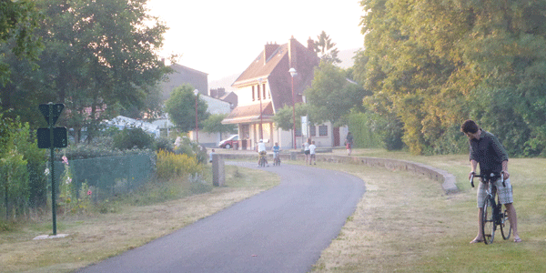

D3
Data-Driven Documents
I’m currently using d3
I’m currently using d3
S3 is needed to host images when using heroku or other similar services (like ninefold). This is because heroku’s filesystem is readonly, so when uploading images (except with deploy) we need to use an off-site sever such as S3.
Spree used to have S3 configurable as part of the admin back end. However, Spree in 2-2-stable has now dropped this integration. https://github.com/spree/spree/commit/b1d6c5e4b9801d888cc76c05116b814945122207 We must refer to the paperclip documentation instead. https://github.com/thoughtbot/paperclip
But spree has some config options available within initializers/spree.rb see below:
1 2 3 4 5 6 7 8 9 10 11 12 13 14 15 16 17 18 19 20 21 22 23 24 25 26 27 28 29 30 31 32 33 34 35 | |
note: the environmental variables were then added to heroku using
1 2 3 | |
Update to the paperclip defaults for image sizes http://guides.spreecommerce.com/developer/logic.html
To change the paperclip defaults for image sizes I created the file app/models/spree/image_decorator.rb. And added this:
1 2 3 4 5 6 7 8 | |
I had naively thought that updating the above would allow also work for the blog I had added to my site using the spree-blogging-spree gem. Unfortunately ckeditor didn’t recognise spree straight away but it can be configured with paperclip.
Based on this I could update app/models/ckeditor/picture.rb to:
1 2 3 4 5 6 7 8 9 10 11 12 13 14 15 16 17 18 19 20 21 22 23 | |
I had a great Spree E-commerce working fine on the localhost – and then I needed to get it onto heroku. Easy right? As someone who has used heroku a few times before (but not for a little while) I remembered it was pretty much a simple case of ‘git push heroku master’. Nope!!
Below is some coverage of what I needed to do. Hopefully it can be of use.
This was using spree branch ‘2-2-stable’ with a postgresql database.
Add the gem ‘unicorn’ and create a file ‘config/unicorn.rb’. The put the below into the file:
1 2 3 4 5 6 7 8 9 10 11 12 13 14 15 16 17 18 19 20 | |
1
| |
1 2 3 4 5 | |
Now running unicorn! :)
1 2 3 4 5 6 | |
1
| |
but i read this is outdated and isn’t used anymore
I also changed config/environments/production.rb to
1
| |
not sure if it did anything
There is currently a known problem with spree and pushing it to heroku. https://github.com/spree/spree/issues/3749; https://github.com/spree/spree/issues/3688 This means using the user-env-compile (point 4) above and pre-compiling assets before pushing to heroku. Some info here: https://devcenter.heroku.com/articles/rails-asset-pipeline Follow the steps below.
1 2 3 | |
I’ve been busy lately working on a Spree E-Commerce site. Spree commerce is an open source ruby on rails project that is very active with lots of users and information. The basic spree gem isn’t going to be enough for most people to get a useful site up and running. Fortunately there are lots of extensions that can be added in to get you most of the way there.
In my implementation so far I have used the following gems (in addition to the standard gateway and devise):
I have found Spree to be an excellent project to use but I certainly had a steep learning curve to get up to speed with Spree and then to understand configuring each and every gem to be used above. So would definitely recommend Spree to fellow ruby on rails developers and anyone else if you are keen to learn and have enough time. There is some good documentation on the Spree site but lacking as you delve too deep.
It is full scale enterprise solution so not something to take on for a quick job.
That said – it will be a lot quicker next time to begin with the gems above and then create a theme from there.
- The ups and downs of learning at Makers Academy :)
We had 2 weeks. 2 weeks to build a web application. A good web application. One that attempted to solve a problem. One that was usable, looked ok, with limited ‘technical debt’ and developed using test-driven development (TDD) principles. One that we would present (in our team of 5) in front of 150 people. Woo and dazzle them. Be so good that we all get acquired by google for millions of pounds.
Well.. maybe not quite the last line but it cetainly seemed like I wasn’t going to be doing much else in the next 2 weeks.
It was the final 2 weeks of the Makers Academy course – a 12 week intensive web development course in London. A course that had been relentless in the amount of new material being thrown around each and every day. A constant battle to try and stay up on it. To try not to sink. A regular battle where you just felt like you were starting to catch up and kind of ‘get it’ – only to then be blind-sided by a whole bunch of new information, concepts and ideas.
Of course don’t get me wrong – it was still fun. It was a great environment to learn with a ping pong table, muesli bars, lots of coffee and plenty of jokes. Hearing a german in a heavy accent tell everyone he was going to ‘fork it’ (in reference to his git account) meant I was now also well up to speed on nerdy jokes.
A normal day went something like this:
Makers Academy was generally open from around 8:30am – 9pm so you could stay back if you wanted to.

Each Friday was a test day. Basically you got given a challenge based around what you’d been learning that week. These ranged from short 1 hour challenges right through to building a site over the course of the weekend. It helped to just focus on the learning aspect rather than the exact outcome especially because some of the websites were too big to do in a weekend so you just had to get done what you could. I enjoyed them on the whole as it let you go at your own pace, reinforce the material and give you a reasonable idea as to how your were tracking. It was all ‘open internet’, so you could search for what you want – just don’t go fooling yourself and copying too much.
All 15 of us in the group were in this together and helped and supported each other throughout. We regularly pair programmed and switched pairs often. We had started in the August cohort bright and energetic quickly overcoming that momentary awkwardness of a new group of people. There were lots of different backgrounds. University graduates, accountant, entrepreneur, poet, venture capitalist, scientist, theatre manager to name a few. Different ages too. 19 yrs old – right up to 40yrs+ all with different motivations for being there but a common goal to learn. Looking back I think we were a particularly lucky group as we all fitted together better than normal. Not sure why exactly – maybe a good girl / guy ratio helped. Maybe because we could bring different perspectives to the table from our different backgrounds.
We worked through an evolving syllabus that was up to date with the latest in web technologies. We would cover a general topic (javascript for example) for a week and do exercises relating to it often culminating in a small project. Due to the interlinked nature of the things we were learning it was all meant to build on top of each other. So learning git (a version control system) early on was then a skill that we used daily from then on. Teacher interaction was through a combination of group lectures, Q & A lectures, a hackpad online resource and questions. We ended with a system of writing our name on the board (a very non-tech queuing system!) that the teacher would then come around and deal with the issues you had. This worked well most of the time. Often a fellow student could help you out also and sometimes a game of ping pong was all that was needed to change focus and come back to the problem to discovered you were missing a dot!
Special mention to our teachers throughout this whole 12 weeks. Evgeny started us out, Enrique kicked us along and Alex brought us home in a calm, composed flurry. I was particularly impressed by the selfless attitude of the teachers. They were genuinely interested in helping you and were quite happy to keep going back over things again and again until you got it. A very different attitude to those bored lecturers at university or people training you at a bank who are just a bit tired of their job.
The teachers at Makers Academy definitely love what they do and it shows. It helps that Makers Academy is a new startup (about a year old) and is flexible with change and open to new ideas. I hope they become rigid in future as the business matures.
I would highly recommend this course to someone who is keen to learn and wants to work hard. You just have to be willing to dig deep and push out of your comfort zone.
Like many things this definitely falls into the category of the more you put into it the more you’ll get out of it. Oh and tell your partner you might be a bit busy so they should take up knitting and/or golf!
If you’re interested our final 2 week project was Set it forget it.
There were 2 broad groups of people at the course.
For those in group 1 that were looking for web development roles they have largely found them. Many got jobs withing the first 2 months of looking. Some who feel they are not quite up to scratch are continuing to practice at home. There are plenty of jobs out there in the field. However, some employers will take some convincing that someone after just 12 weeks is worth hiring. Makers Academy is trying to help convince them by bringing them along to events to see for themselves and pair programming with students to see what we know.
For group 2 – everyone was pretty happy with the course and I think most people got out of the course what they wanted.
For me personally, I have moved back to Australia (after 5 years away) and have been enjoying sunshine, beaches, catching up with family and friends. My coding took a break for a few weeks (I also dropped into say hello to friends in America) but am now back on the horse and working on a few projects of my own so I’m somewhere between groups 1 & 2. Will be looking for some web development work soon!
Have starting learning d3.js. I’ve used in the chart at the top. It’s one of the things I’m hoping to progress further with.
So… I’ve been meaning to write a post to reflect just a bit on what the hell happened last year.
I was sailing along in a comfortable corporate job in London. Life was pretty good. Taking trips here and there (Paris one week – Morocco the next) and then I decided enough was enough. I quit.
I won’t pretend it was a surprise. Not something I decided on emotionally, quickly, self-righteously in a moment of clarity. No. I had been uncomfortable with the situation for a long time. Slowly being lulled into inaction by the rhythm of a steady paycheck and the acknowledgement that everyone else was doing it. And that it was all “normal”. It was “Ok”. Just ok – but not great. So anyway – I was sick of dealing with just Ok.
As I handed in the resignation I got the usual questions.
“Which company are you going to?”
“Are they paying you more?”
“Can we pay you more?”
All I could adequately come up with was some vague notion of “travelling” which was enough of a reason for many. It then often summoned a certain amount of envy in certain people and surprisingly often ended with a fierce (but unnecessary) declaration of the fact they’d love to do that too but had lots of reason why it was just not possible!
“I’d love to do that!.. But I have kids!”
“But I have a mortgage”
“But I might get a manager job”
So anyway, we (my girlfriend and I) eventually worked out what the travelling would be. Cycling. London to Paris and then onto Spain. Adventure. And it was awesome.

Of course, this was a bit of a distraction. I needed to decide what was really next. What was going to better than just ok. In 10 years of corporate climbing I’d learnt a lot. How to push the boundaries without getting your head knocked off. How to stand out a bit but not too much. How to do the job well.
My role had been as a business analyst. The guy who sits on projects and tries to bridge the gap between the business guys and the IT people. These things often morphed into huge expensive projects with a complex hierarchical system where it can get difficult to get things done.
In the midst of this I often felt a great sense of impotence into not being able to just get things done. My lack of coding knowledge meant that I was always going to have to outsource projects to others. I have always been someone who is keen to learn new things and so I started to try some coding. Of course this began with some MS Excel VBA work but struggled to progress far beyond this. And it wasn’t something that was encouraged. I never had access to any of the tools or environments so any experimentation had to be done in my own time.
An ecommerce side-project I had created the need to build a website. A weekend HTML and CSS course at General Assembly got me started with the basics. I then hacked and failed over and over again until I eventually spat out a working ecommerce website using an opensource php project called Opencart. Cool. My first proper website.
I knew I wanted to learn more. I tried some codeacademy courses, some khan acaedemy, and even bought a javascript book that I read but didn’t really understand. I needed some help to get over the hump and I knew that I had to dive in deep and a short weekend course just wouldn’t cut it.
I eventually found Makers Academy and it sounded perfect. 12 weeks of intensive web development training in London. Learning to code full time. Every day. This was going to be the way to get over the hump. After mulling it over for a while.. I clicked sign up.
Hello blogging world. I have thought about a blog for a little while. Welcoming in 2014 now seems like a pretty good time.
This will build as a collection of technical knowledge and experiences on the journey to getting better at web development and data visualisations.
This blog is built using Octopress and the theme Oscailtie. Many thanks.